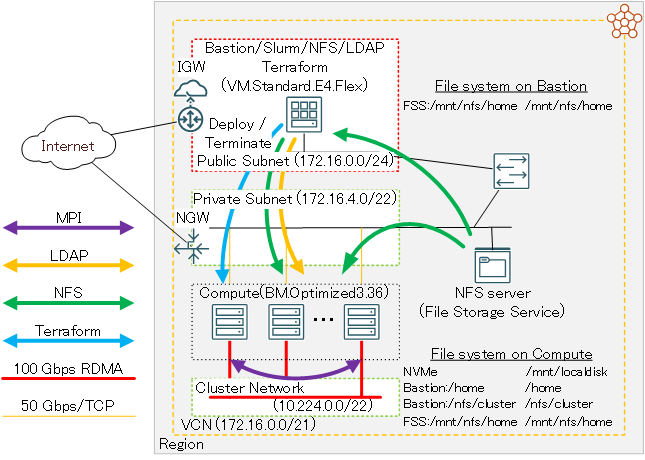
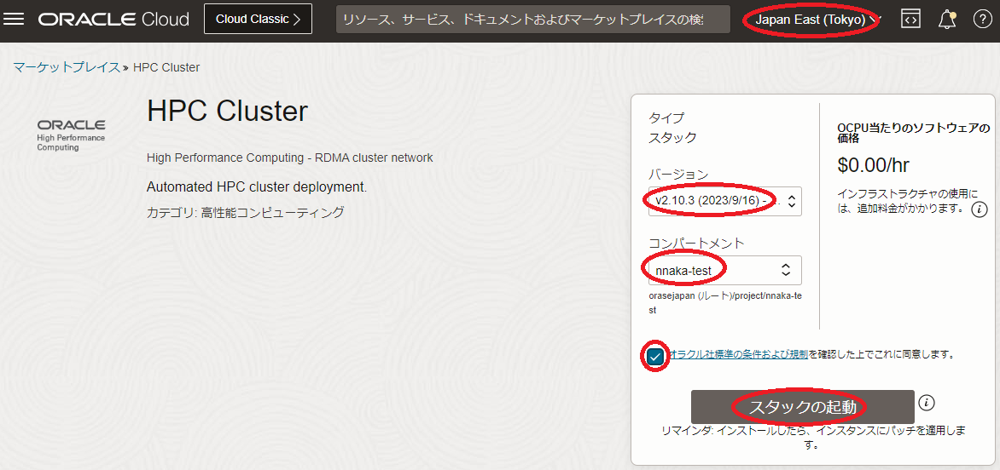
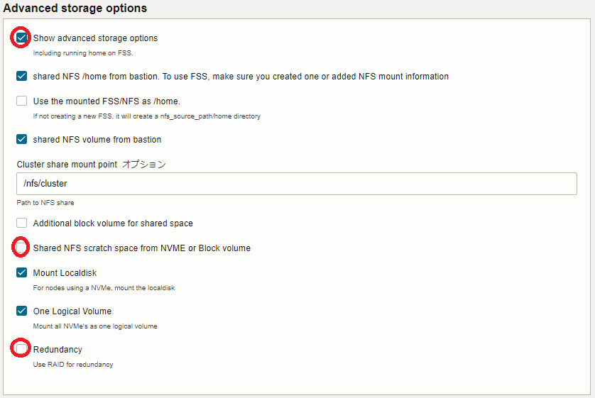
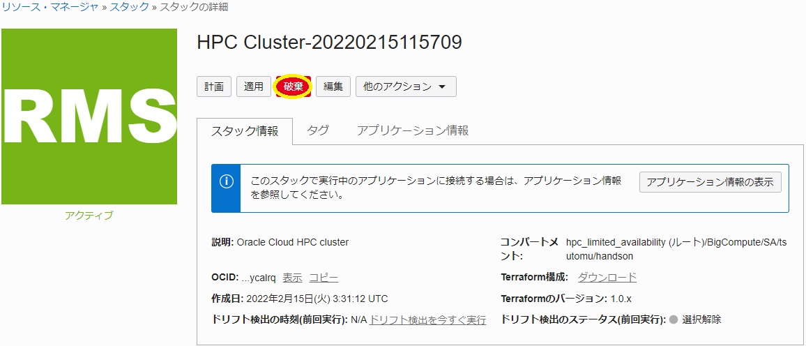
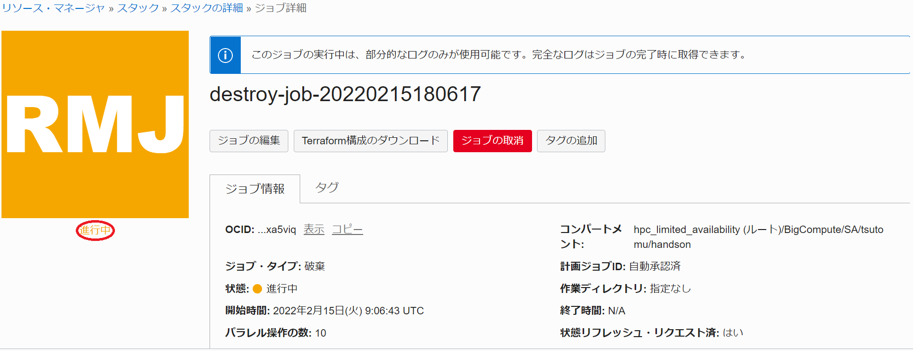

Oracle Cloud Infrastructure（以降OCIと記載）は、仮想化オーバーヘッドの無いHPC用途に特化したベアメタルシェイプとこれらを接続する クラスタ・ネットワーク を提供しており、HPCワークロードを実行するHPCクラスタを構築するには最適なクラウドサービスです。
このチュートリアルは、 マーケットプレイス から無償で利用可能な HPCクラスタスタック を利用し、以下構成のオンデマンドHPCクラスタを構築します。
- HPC向けIntel Ice Lakeプロセッサ搭載計算ノード（ BM.Optimized3.36 ）
- 100 Gbps RoCEv2 RDMAインターコネクト (クラスタ・ネットワーク)
- インターネットからSSH接続可能なBastionノード
- OS: Oracle Linux 8.6
- ジョブスケジューラ: Slurm
- オンデマンドクラスタ機能： クラスタオートスケーリング
- ファイル・ストレージサービスによるHPCクラスタ内ホームディレクトリ共有
- LDAPによるクラスタ内ユーザ統合管理

またこのチュートリアルは、デプロイしたHPCクラスタのインターコネクト性能をIntel MPIベンチマークで確認します。
オンデマンドHPCクラスタにおけるワークロード実行は、Slurmにジョブを投入することで行い、クラスタオートスケーリングがジョブ実行に必要な計算ノードをクラスタ・ネットワークと共に動的に起動、構築されたクラスタにSlurmがジョブをディスパッチします。
またクラスタオートスケーリングは、ジョブが実行されない状態が一定時間経過すると、自動的にクラスタを削除します。
本チュートリアルで使用するHPCクラスタスタックは、通常であれば数日かかるオンデマンドHPCクラスタ構築作業を、OCIコンソールのGUIから10項目程度のメニューを選択した後、1クリックで自動的に実施することを可能とします。
所要時間 : 約2時間
前提条件 : オンデマンドHPCクラスタを収容するコンパートメント(ルート・コンパートメントでもOKです)の作成と、このコンパートメントに対する必要なリソース管理権限がユーザーに付与されていること。具体的には、以下ページの Policies to deploy the stack: に記載のポリシーと Policies for autoscaling or resizing に記載のダイナミック・グループとポリシーが作成されていること。
https://cloud.oracle.com/marketplace/application/67628143/usageInformation
注意 : チュートリアル内の画面ショットは、現在のOCIコンソール画面と異なっている場合があります。また使用するHPCクラスタスタックのバージョンが異なる場合も、チュートリアル内の画面ショットが異なる場合があります。
1. HPCクラスタスタック
1-0. 概要
本チュートリアルで使用する HPCクラスタスタック は、大きく2つのステップに分けて構築を実施しており、前半は TerraformによるOCIリソース構築フェーズで、後半はTerraformから起動されるAnsibleが行うOSレベルのカスタマイズフェーズです。
具体的には、以下のような処理が行われます。
［TerraformによるOCIリソース構築フェーズ］
- VCNと関連するネットワークリソース構築
- クラスタ・ネットワーク と関連リソース構築
- Bastionノードインスタンス構築
- ファイル・ストレージ構築
- Ansible関連ソフトウェアインストール
[AnsibleによるOSレベルカスタマイズフェーズ]
- NFSファイル共有環境構築
- LDAPユーザ統合環境構築
- Slurm環境構築
- クラスタオートスケーリング ツール群インストール
1-1. スタックの作成
リソース・マネージャ でリソースをデプロイする場合、まずそのための スタック を作成する必要があります。
本章は、 マーケットプレイス が提供する HPCクラスタスタック を元に、前述の環境構築のためのスタックを作成します。このチュートリアルで使用するHPCクラスタスタックは、バージョン2.10.1.1です。
-
以下マーケット・プレースのHPCクラスタスタックのページにアクセスします。
-
OCIコンソールへのログイン画面が表示された場合（まだログインしていない場合）、ログインを完了します。
- 表示される以下画面で、以下の情報を入力し、 スタックの起動 ボタンをクリックします。
- リージョン : オンデマンドHPCクラスタをデプロイするリージョン
- バージョン : v2.10.1.1
- コンパートメント : スタックを作成するコンパートメント

- 表示される以下 スタック情報 画面で、以下の情報を入力し、下部の 次 ボタンをクリックします。
- 名前 : スタックに付与する名前（任意）
- 説明 : スタックに付与する説明（任意）
-
表示される 変数の構成 画面で、各画面フィールドに以下の情報を入力し、下部の 次 ボタンをクリックします。なお、ここに記載のないフィールドは、デフォルトのままとします。
5.1 Cluster configuration フィールド
- Public SSH key : （Bastionノードにログインする際使用するSSH秘密鍵に対応する公開鍵）
- 公開鍵ファイルのアップロード（ SSHキー・ファイルの選択 ）と公開鍵のフィールドへの貼り付け（ SSHキーの貼付け ）が選択可能

5.2 Headnode options フィールド
- Availability Domain : （BastionノードをデプロイするAD）
5.3 Compute node options フィールド
- Availability Domain : （計算ノードをデプロイするAD）
- Shape of the Compute Nodes : BM.Optimized3.36（計算ノードに使用するシェイプ）
- Initial cluster size : 0 (*1)
- Image version : HPC_OL8（計算ノードのOSイメージ）
*1) このフィールドは、スタティックに常時起動しておく計算ノードのノード数を指定しますが、本チュートリアルはオンデマンドでのみ計算ノードをデプロイするため、このフィールドを0とします。
5.4 Autoscaling フィールド
- Scheduler based autoscaling : チェック
5.5 Additional file system フィールド
- Add another NFS filesystem : チェック
- Create FSS : チェック
- NFS Path : /mnt/home（※2）
- NFS server Path : /mnt/home（※2）
※2) ここで指定するパスは、ファイル・ストレージ領域に作成するLDAPユーザのホームディレクトリを格納するディレクトリを指定しています。よって、ユーザ名user_nameのLDAPユーザのホームディレクトリは、/mnt/home/user_nameとなります。

5.6 Advanced storage options フィールド
- Show advanced storage options : チェック
- Shared NFS scratch space from NVME or Block volume : チェックオフ（※3）
*3) 計算ノードのNVMeローカルディスク領域をNFS共有するかの指定で、本チュートリアルでは共有しません。

- Public SSH key : （Bastionノードにログインする際使用するSSH秘密鍵に対応する公開鍵）
-
表示される 確認 画面で、これまでの設定項目が意図したものになっているかを確認し、以下 作成されたスタックで適用を実行しますか。 フィールドの 適用の実行 をチェックオフし、下部の 作成 ボタンをクリックします。
ここで 適用の実行 をチェックした場合、 作成 ボタンのクリックと同時にスタックの適用が開始され、オンデマンドHPCクラスタのデプロイが始まりますが、このチュートリアルではスタックの計画を実行してから適用を行います。
これで、以下画面のとおりオンデマンドHPCクラスタを構築するスタックが作成されました。

1-2. スタックの計画
本章は、完成した スタック を計画し、どのようなリソースがデプロイされるか確認します。
-
作成したスタックの以下 スタックの詳細 画面で、 計画 ボタンをクリックします。

-
表示される以下 計画 サイドバーで、 計画 ボタンをクリックします。

-
表示される以下 ジョブの詳細 ウィンドウで、左上のステータスが 受入れ済 → 進行中 → 成功 と遷移すれば、スタックの計画が終了しています。

表示される以下 ログ フィールドで、適用時にデプロイされるリソースを確認します。

1-3. スタックの適用
本章は、計画で作成されるリソースに問題が無いことを確認した スタック に対し、適用を行いオンデマンドHPCクラスタをデプロイします。
-
以下 スタックの詳細 画面で、 適用 ボタンをクリックします。

-
表示される以下 適用 サイドバーで、 適用 ボタンをクリックします。

-
表示される以下 ジョブ詳細 ウィンドウで、左上のステータスが 受入れ済 → 進行中 と遷移すれば、スタックの適用が実施されています。

表示される以下 ログ フィールドで、リソースのデプロイ状況を確認します。
この適用が完了するまでの所要時間は、15分程度です。
ステータスが 成功 となれば、オンデマンドHPCクラスタのデプロイが完了しています。
2. 事前準備
2-1. Bastionノード確認
本章は、デプロイされたBastionノードにログインし、環境の確認を行います。
-
Bastionノードログイン
Bastionノードへのログインは、 スタック 適用時の以下 ログ フィールドの最後に表示されているBastionノードのIPアドレスを使用し、インターネットを介してopcユーザでSSHログインします。
このSSH接続では、スタックに指定したSSH公開鍵に対応する秘密鍵を使用します。
> ssh -i path_to_ssh_secret_key opc@123.456.789.123 -
Bastionノードファイルシステム確認
Bastionノードは、以下のようにファイル・ストレージの/mnt/homeがマウントされています。この/mnt/homeは、オンデマンドHPCクラスタ内で共有するLDAPユーザのホームディレクトリに使用します。
> df -h /mnt/home Filesystem Size Used Avail Use% Mounted on FSS_ip:/mnt/home 8.0E 0 8.0E 0% /mnt/home
2-2. LDAPユーザ作成・確認
本章は、 HPCクラスタスタック が作成したLDAP統合ユーザ管理環境にLDAPユーザを作成し、このユーザでインターネットからBastionノードにSSHログイン出来ることを確認します。
このLDAP統合ユーザ管理環境は、BastionノードがLDAPサーバ兼クライアントで計算ノードがLDAPクライアントです。
-
LDAPユーザ作成
LDAPサーバであるBastionノードは、LDAPユーザ管理のためのclusterコマンドが用意されています。
このコマンドは、作成するユーザのホームディレクトリを/home以下とするため、本環境のLDAPユーザ用ホームディレクトリであるファイル・ストレージの/mnt/home以下に作成するよう修正する必要があります。このため、以下コマンドをBastionノードのopcユーザで実行します。
> sudo sed -i 's/\/home\//\/mnt\/home\//g' /usr/bin/cluster次に、以下コマンドをBastionノードのopcユーザで実行し、LDAPユーザを作成します。
なおこのユーザは、この後の稼働確認に使用します。> cluster user add user_name Password: <- Password for user_name Repeat for confirmation: <- Password for user_name Full Name: full_name <- Full name for user_name Creating group > id user_name uid=10001(user_name) gid=10006(user_name) groups=10006(user_name)ここで指定するパスワードは、オンデマンドHPCクラスタ内の認証にパスワード認証を使用しないため、任意のパスワードで構いません。
次に、このユーザがインターネットからBastionノードにSSHログインする際に使用するSSH秘密鍵に対応する公開鍵を登録するため、以下コマンドをBastionノードのopcユーザで実行します。
> echo 'public_key_for_user_name' | sudo tee -a ~user_name/.ssh/authorized_keys public_key_for_user_name -
LDAPユーザログイン
先に作成したLDAPユーザを使用したインターネットを介したBastionノードへのログインは、以下コマンドでSSHログインします。
このSSH接続では、先のLDAPユーザ作成で指定したSSH公開鍵に対応する秘密鍵を使用します。
> ssh -i path_to_ssh_secret_key_for_user_name user_name@123.456.789.123
3. オンデマンドHPCクラスタ稼働確認（Intel MPIベンチマーク性能検証）
3-0. 概要
本章は、Intel MPIベンチマーク性能検証用のジョブを使用し、オンデマンドHPCクラスタがジョブの投入・終了とともに自動的にHPCクラスタを作成・削除することを確認するとともに、HPCクラスタのインターコネクト性能を検証します。
ここでは、2ノードのPing-Pong性能を計測しており、以下性能が出ています。
- 帯域：約12 GB/s（インタフェース物理帯域100 Gbpsに対し96 Gbpsを計測）
- レイテンシ：約1.7 μs
3-1. ジョブスクリプト作成
BastionノードのLDAPユーザで、以下のジョブスクリプトを作成します。
[pingpong.sh]
#!/bin/bash
#SBATCH -p compute
#SBATCH -n 2
#SBATCH -N 2
#SBATCH -J ping_pong
#SBATCH -o stdout.%J
#SBATCH -e stderr.%J
# Only for BM.Optimized3.36
export UCX_NET_DEVICES=mlx5_2:1
source /usr/mpi/gcc/openmpi-4.1.2a1/bin/mpivars.sh
mpirun /usr/mpi/gcc/openmpi-4.1.2a1/tests/imb/IMB-MPI1 -msglog 3:28 PingPong
3-2. ジョブ投入
BastionノードのLDAPユーザで以下コマンドを実行し、作成したジョブスクリプトをSlurmに投入、ジョブステータスを確認します。
> sbatch pingpong.sh
Submitted batch job 1
> squeue
JOBID PARTITION NAME USER ST TIME NODES NODELIST(REASON)
1 compute ping_pon user_nam PD 0:00 2 (Nodes required for job are DOWN, DRAINED or reserved for jobs in higher priority partitions)
この時点では、ジョブを実行するための計算ノードが存在しないため、ジョブのステータスがPDの状態です。
3-3. HPCクラスタデプロイ状況確認
クラスタオートスケーリング は、Bastionノードのopcユーザのcrontabから以下のように毎分起動されるautoscale_slurm.shというPyrhonスクリプトにより、Slurmのジョブ投入状況に応じてオンデマンドに必要な数の計算ノードを クラスタ・ネットワーク と共にデプロイします。
> crontab -l | grep autoscale_slurm
* * * * * /opt/oci-hpc/autoscaling/crontab/autoscale_slurm.sh >> /opt/oci-hpc/logs/crontab_slurm_`date '+\%Y\%m\%d'`.log 2>&1
このため、先の手順のジョブ投入から最大で1分以上経過すると、自動的に2ノードの計算ノードとこれらを接続するクラスタ・ネットワークのデプロイを開始します。
そこで、OCIコンソールでオンデマンドHPCクラスタをデプロイしたリージョンを選択後、 コンピュート → インスタンス とメニューを辿り、以下のインスタンス一覧から2ノードの計算ノードが プロビジョニング中 となっていることを確認します。
このジョブは、Terraformによる計算ノードのデプロイが完了すると前述のインスタンスの 状態 が 実行中 となりますが、ここからAnsibleによるOSのカスタマイズが始まり、これが完了して初めてSlurm上のジョブ状態がR（実行中）になるため、ジョブ投入からジョブ実行開始までおよそ10分を要します。
3-4. ジョブ結果確認
BastionノードのLDAPユーザで以下コマンドを実行し、ジョブ完了を確認した後、その出力結果を確認します。
> squeue
JOBID PARTITION NAME USER ST TIME NODES NODELIST(REASON)
> cat stdout.1
#------------------------------------------------------------
# Intel (R) MPI Benchmarks 2018, MPI-1 part
#------------------------------------------------------------
# Date : Tue May 16 06:38:34 2023
# Machine : x86_64
# System : Linux
# Release : 4.18.0-372.26.1.0.1.el8_6.x86_64
# Version : #1 SMP Tue Sep 13 21:44:27 PDT 2022
# MPI Version : 3.1
# MPI Thread Environment:
# Calling sequence was:
# /usr/mpi/gcc/openmpi-4.1.2a1/tests/imb/IMB-MPI1 -msglog 3:28 PingPong
# Minimum message length in bytes: 0
# Maximum message length in bytes: 268435456
#
# MPI_Datatype : MPI_BYTE
# MPI_Datatype for reductions : MPI_FLOAT
# MPI_Op : MPI_SUM
#
#
# List of Benchmarks to run:
# PingPong
#---------------------------------------------------
# Benchmarking PingPong
# #processes = 2
#---------------------------------------------------
#bytes #repetitions t[usec] Mbytes/sec
0 1000 1.67 0.00
8 1000 1.66 4.81
16 1000 1.66 9.62
32 1000 1.73 18.54
64 1000 1.83 34.92
128 1000 1.88 68.05
256 1000 2.14 119.35
512 1000 2.20 232.63
1024 1000 2.33 439.71
2048 1000 3.05 672.50
4096 1000 3.76 1088.19
8192 1000 4.87 1682.36
16384 1000 6.73 2433.40
32768 1000 9.27 3536.08
65536 640 10.87 6027.71
131072 320 16.32 8032.19
262144 160 28.67 9142.25
524288 80 50.10 10465.36
1048576 40 92.88 11289.03
2097152 20 178.64 11739.66
4194304 10 349.87 11988.22
8388608 5 692.62 12111.44
16777216 2 1378.23 12173.04
33554432 1 2750.67 12198.62
67108864 1 5491.25 12221.06
134217728 1 10974.52 12229.94
268435456 1 21942.87 12233.38
# All processes entering MPI_Finalize
3-5. HPCクラスタ削除確認
クラスタオートスケーリング は、計算ノードで実行されるジョブが無い状態が10分間継続すると、以降crontabから最初に起動されるautoscale_slurm.shがこの計算ノードをクラスタ・ネットワークと共に削除します。
OCIコンソールで、想定通りHPCクラスタが削除されていることを確認します。
4. スタックの破棄
本章は、 スタック を破棄することで、構築したオンデマンドHPCクラスタを削除します。
以降の手順は、本チュートリアルで作成したOCI上のリソースをすべて削除するため、 LDAPユーザのホームディレクトリ用途で作成したファイル・ストレージに格納されているデータが全て消失 します。
なお、 クラスタオートスケーリング がオンデマンドでデプロイした計算ノードと クラスタ・ネットワーク は、このスタック破棄で削除されません。
そのため、クラスタオートスケーリングがこれらのリソースを削除したことを確認し、その後スタックの破棄を実施します。
-
以下 スタックの詳細 画面で、 破棄 ボタンをクリックします。

-
表示される以下 破棄 サイドバーで、 破棄 ボタンをクリックします。

-
表示される以下 ジョブ詳細 ウィンドウで、左上のステータスが 受入れ済 → 進行中 と遷移すれば、スタックの破棄が実施されています。

表示される以下 ログ フィールドで、リソースの削除状況を確認します。
この破棄が完了するまでの所要時間は、2分程度です。
ステータスが 成功 となれば、オンデマンドHPCクラスタの削除が完了しています。
これで、このチュートリアルは終了です。